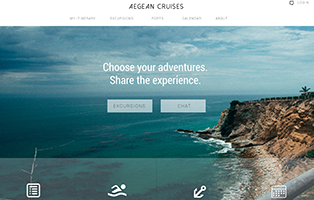
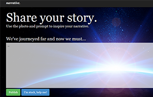
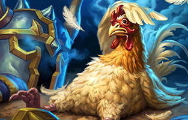
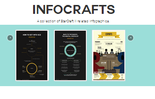

NINA DANG
Congrats! You found the super secret message!
Or maybe I
purposely made this image really large (design thinking?). Welcome to my
portfolio. I'm a student at the University of Washington, a StarCraft fanatic
and amateur photographer. I make websites and graphic designs with the hope of
breaking into the UX industry. Feel free to shoot me an email, glance at my
resume, or browse my projects below.

USER EXPERIENCE & FRONTEND WEB DEVELOPMENT
BlizzStats
UX, Frontend & Backend Web Dev

Aegean Cruises
UX

Narrative
UX, Frontend Web Dev
VISUAL DESIGN

Hearthstone Infographic
Graphic Design, Data Vis

InfoCrafts
Graphic Design, Frontend Web Dev
Polygon Art
Graphic Design